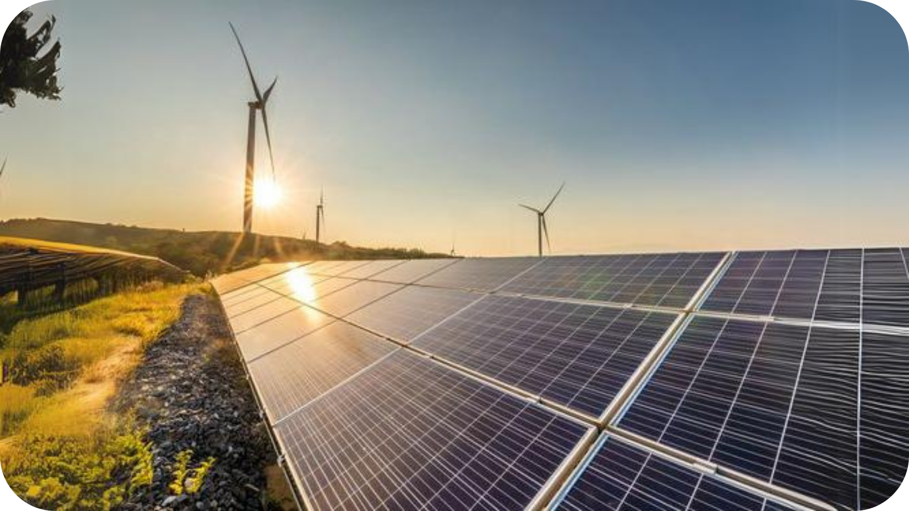
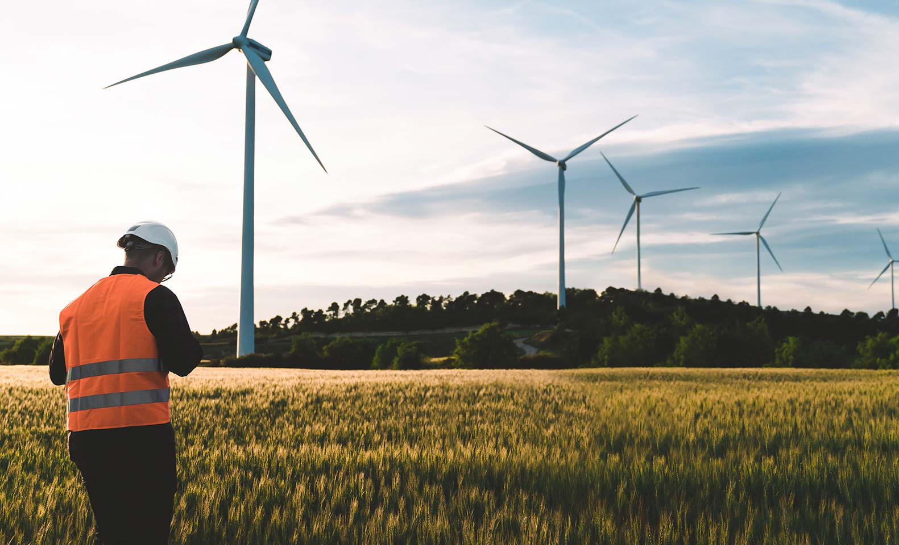

Conciencia energética
Comprensión del consumo energético y adopción de hábitos responsables.
Es la comprensión ética y el compromiso activo con el uso racional, eficiente y sostenible de la energía, buscando minimizar el impacto ambiental. Implica adoptar hábitos responsables, educación constante y la adopción de tecnologías limpias para reducir el consumo y la huella de carbono, impulsando la transición hacia un futuro sostenible.
Comprensión del consumo energético y adopción de hábitos responsables.

Promoción de fuentes limpias como la solar y la eólica.

Equilibrio entre desarrollo humano y medio ambiente.
Se basa en comprender cómo utilizamos la energía y cómo nuestras acciones influyen en el consumo energético.
Reduce el uso innecesario y optimiza recursos.
Disminuye gases contaminantes y el impacto ambiental.
Fomenta cultura ambiental consciente.
Mejora la calidad de vida y el entorno.
Cada sector desempeña un papel clave en la construcción de una sociedad más responsable.
Promoción de hábitos sostenibles en el día a día.
Optimización de procesos y reducción ambiental.
Modelos de negocio sostenibles.
Transición hacia sistemas más responsables.